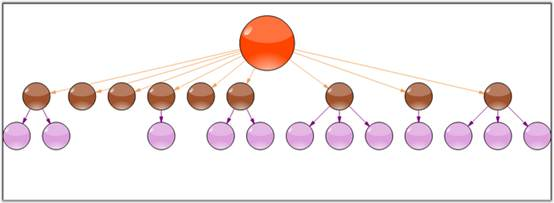

The SubgraphTreeLayoutManager enables the sub nodes of a diagram layout tree to have an orientation that is distinct from the parent node. The subgraph orientation is specified using a SubgraphPreferredLayout event that the layout manager raises before positioning each set of sub nodes in the graph.
The event of the SubgraphLayoutManager class is as follows:
|
Event |
Description |
|
SubgraphPreferredLayout |
Event that the layout manager raises before positioning each set of sub nodes in the graph. |
Programmatically, it is implemented as follows.
|
[C#]
SubgraphTreeLayoutManager st = new SubgraphTreeLayoutManager(this.diagram1.Model,0, 20, 20); st.SubgraphPreferredLayout += new SubgraphPreferredLayoutEventHandler (st_SubgraphPreferredLayout); this.diagram1.LayoutManager = st; this.diagram1.LayoutManager.UpdateLayout(null); this.diagram1.UpdateView();
private void st_SubgraphPreferredLayout(object sender, SubgraphPreferredLayoutEventArgs evtArgs) { evtArgs.ResizeSubgraphNodes=false; evtArgs.RotationDegree=0; } |
|
[VB]
Dim st As New SubgraphTreeLayoutManager(Me.diagram1.Model, 0, 20, 20) AddHandler st.SubgraphPreferredLayout, AddressOf st_SubgraphPreferredLayout Me.diagram1.LayoutManager = st Me.diagram1.LayoutManager.UpdateLayout(Nothing) Me.diagram1.UpdateView()
Private Sub st_SubgraphPreferredLayout(ByVal sender As Object, ByVal evtArgs As SubgraphPreferredLayoutEventArgs) evtArgs.ResizeSubgraphNodes = False evtArgs.RotationDegree = 0 End Sub |

Figure 61: Sub Graph Tree Layout